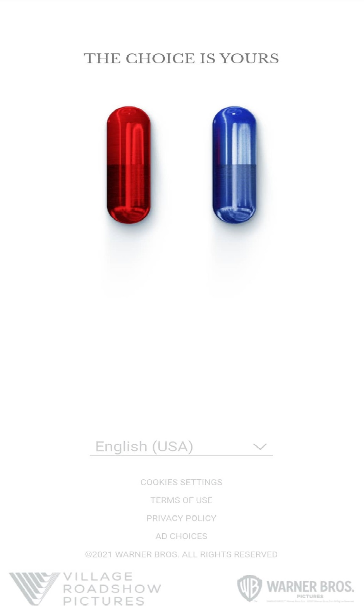
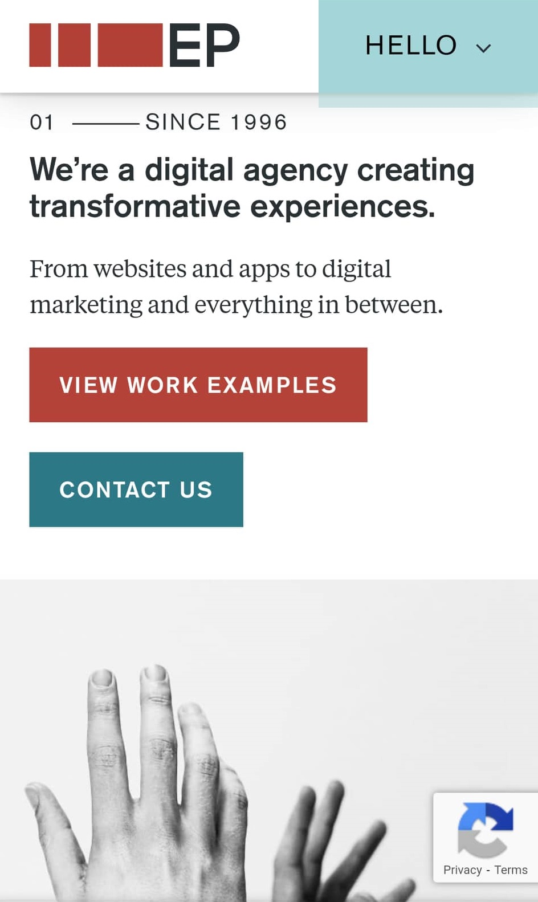

Hick's Law
CHOOSE YOUR REALITY
thechoiceisyours.whatisthematrix.com
In web design, sometimes less is more.
Hence, that in order to maintain a user's engagement with your website, it would be better for you to give them less options so they won't spend too much time thinking.
The Matrix is one of the most famous Action Sci-Fi movies of recent history, with Neo having to pick a red pill or a blue pill being one of the most famous scenes in the movie.
To reflect this, the marketing team made a promotional website that makes a user choose between a red pill or a blue pill, each leading you to a different trailer.
This website with only two options is enough to generate interest for their upcoming movie while simultaneously staying true to a major theme of the movie and saying less.
Visual Hierarchy
Electric Pulp
electricpulp.com
This website is a great example of emphasizing certain parts to state its significance while maintaining a very clean look, making navigation very smooth and easy. This shows how much good design and effective use of a visual hierarchy can make even a simple, minimalistic website that primarily uses black text and black be attractive on its own.
Contrast
Shopify
shopify.com
Shopify makes good use of contrasting colors while giving their website an attractive color scheme. The white text blends very well to the apporiate green colors they have chosen. And in some sections, the dark green text contrasts very well the light green background. This gives the website an identity of it's own while making it look pleasant to the user's eyes.